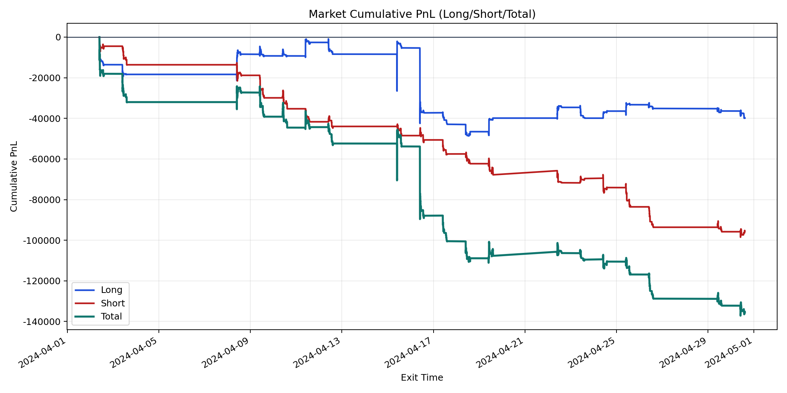
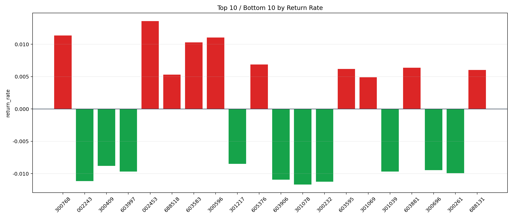

| repo_root | /home/haoranyou/data/output/dynamic_AUM_TAKER_index1000 |
|---|---|
| period_months | 1 |
| period_label | 2024-04-02_to_2024-04-30 |
| start_time | 2024-04-02 09:45:12 |
| end_time | 2024-04-30 14:39:22 |
| n_trades | 8741 |
| n_symbols | 234 |
| total_pnl | -135287.7566500002 |
| long_total_pnl | -39864.50909999868 |
| short_total_pnl | -95423.2475500015 |
| total_entry_notional | 157144517.0 |
| long_entry_notional | 80608118.00000001 |
| short_entry_notional | 76536399.0 |
| total_return_rate | -0.0008609129941835655 |
| long_return_rate | -0.0004945470765115577 |
| short_return_rate | -0.0012467694952567796 |
| top_symbols_by_return | ["002453", "300768", "300596", "603583", "605376", "603881", "603595", "688131", "688518", "301069"] |
| bottom_symbols_by_return | ["301078", "300232", "002243", "603906", "300261", "603997", "301039", "300696", "300409", "301217"] |

